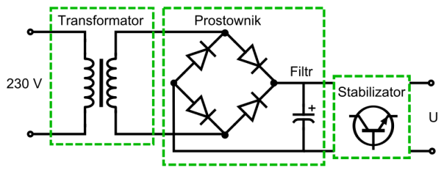

Zasilacz Transformatorowy (zasilacz liniowy)

Jest to zasilacz, w którym na wejściu zastosowano transformator transformujący wejściowe napięcie przemienne do takiej wartości,by (po wyprostowaniu i ewentualnej stabilizacji liniowej) na wyjściu zasilacza uzyskać żądane napięcie stałe.
Zasilacze transformatorowe są zasilane z sieci elektroenergetycznej (najczęściej 230 V, 50 Hz) i służą zwykle do zasilania urządzeń o niskim napięciu.
W konstrukcji zasilacza transformatorowego można wyróżnić trzy zasadnicze elementy:
1.Transformator
2.Stabilizator napięcia(w prostszych zasilaczach może być pominięty)
3.Prostownik
Napięcie przemienne z transformatora jest przetwarzane na napięcie stałe przy pomocy układu prostownika. Napięcie wyjściowe takiego prostownika ma przebieg tętniący. Równoległe dołączenie kondensatora filtrującego o odpowiedniej pojemności pozwala na znaczne zmniejszenie amplitudy tętnień. Im większa jest pojemność użytego kondensatora, tym napięcie wyjściowe ma przebieg bardziej zbliżony do przebiegu stałego.Dobór tych elementów decyduje o parametrach wyjściowych zasilacza: napięciu, maksymalnym prądzie i poziomie tętnień.
Podstawową zaletą zasilaczy transformatorowych jest prosta konstrukcja, składająca się tylko z kilku elementów.Do wad można zaliczyć:
1.Duże rozmiary transformatora, wynikające z faktu, że zasilacze te pracują z napięciem o częstotliwości 50 Hz. Ma to wpływ na masę zasilacza – dla przykładu przy napięciu wyjściowym 16 V, na każdy amper prądu wyjściowego przypada około 0,5 kg masy.
2.Straty mocy w stabilizatorze, który rozprasza pewną ilość mocy w postaci ciepła. Przy dużych prądach lub dużej różnicy napięć między wejściem a wyjściem stabilizatora (spotykanej zwłaszcza w zasilaczach regulowanych) wymagane są duże radiatory.
3.Niska sprawność konwersji mocy – na poziomie 50%.
Ze względu na większą wydajność zasilaczy impulsowych oraz coraz bardziej ekologiczne wykorzystanie materiałów przez producentów, zasilacze transformatorowe są wycofywane z użycia i prawie nie montowane w nowych urządzeniach. Aktualnie żaden producent nie stosuje zasilaczy transformatorowych do zasilania komputerów lub ładowarek telefonów komórkowych. Zasilacze impulsowe są mniejsze gabarytowo i mają znacznie lepszą sprawność. Dawniej konstrukcje zasilaczy impulsowych uchodziły za skomplikowane i było to jedną z przyczyn dużego rozpowszechnienia zasilaczy transformatorowych, szczególnie w zastosowaniach amatorskich. Obecnie dostępne są wyspecjalizowane układy scalone przeznaczone do wykorzystania w zasilaczach impulsowych, ułatwiające ich projektowania i ograniczające liczbę wymaganych elementów zewnętrznych do niezbędnego minimum. Niemniej, zasilacze transformatorowe są nadal chętnie wykorzystywane w prostych projektach amatorskich, ze względu na prostotę budowy i odporność na błędy konstrukcyjne.